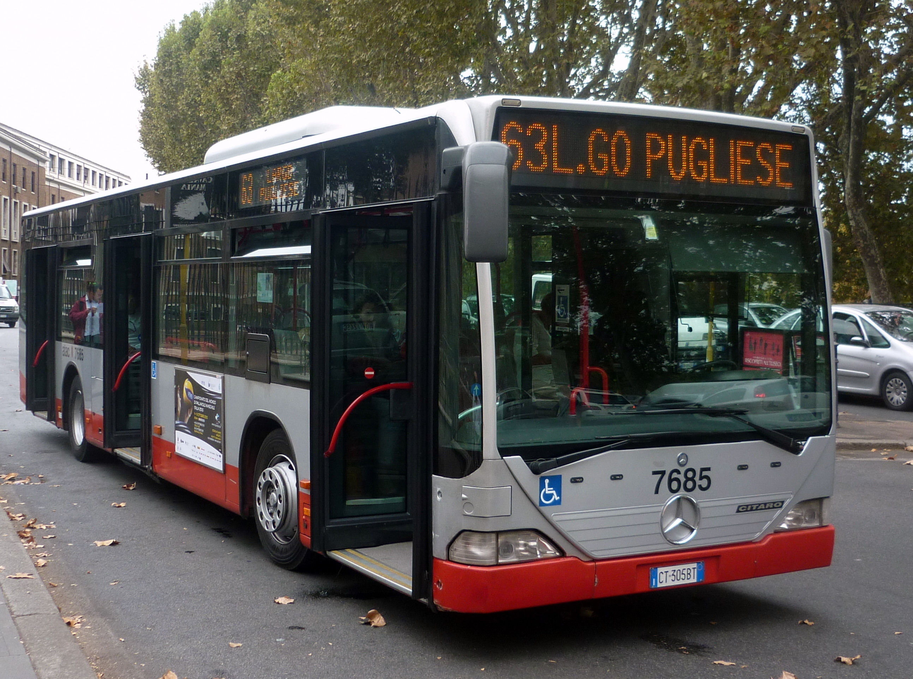

Perché il trasporto pubblico è così importante
In questo articolo, parzialmente (ma non del tutto) tematicamente diverso da altri, vorrei analizzare come il trasporto pubblico sia una semplicissima soluzione a moltissimi problemi della società. Il sistema capitalistico e la mentalità occidentale hanno esportato l'individualismo in qualunque ambito della nostra vita anche dove questo ha determinato svantaggi, come il trasporto di merci e persone.
Iniziamo dal chiarire una cosa: vorrei includere nella definizione "trasporto pubblico" anche i servizi ferrioviari in quanto, se posseduti dal governo (e su questo potrebbe volerci un articolo separato), possono portare benifici simili, seppure su scala e in ambiti leggermente differenti, al trasporto pubblico vero e proprio.
Il punto più semplice da fare, ma non necessariamente il meno importante, è senza dubbio l'inquinamento ed il riscaldamento globale. Una delle principali fonti di gas serra sono i mezzi di trasporto (tra il 20% e il 30% circa a seconda delle fonti). Un utilizzo più massiccio di servizi di trasporto pubblico ridurrebbe massivamente tali emissioni, poiché autobus e maggiormente metro e tram (anche grazie all'uso di energia elettrica, parzialmente più pulita) sono più efficienti nell'uso di energia per persona. Un'altra conseguenza sarebbe la riduzione di strade, per il minor traffico. Ciò lascerebbe maggiore spazio nelle città per aree verdi o pedonali, riducendo l'effetto di "hotspot" di calore.
Questo avrebbe anche risultati positivi sul benessere dei cittadini sia a livello fisico che psicologico. Passiamo infine a qualche considerazione più ardita ed in linea con la nostra visione: gli effetti sulla società.
Il mercato delle automobili è dominato da 14 aziende che controllano 54 brand e più del 90% dei veicoli in commercio. Ridurre il numero di veicoli significherebbe indebolire aziende fino ad ora intoccabili.
Un'ultimo punto di simile fattura, ma che punta a migliorare le condizioni di vita prima ancora di abbattere un monopolio, è una maggiore uguaglianza sociale. Un veicolo privato non è un possedimento di lusso, ma rimane molto costoso e quasi necessario contemporaneamente, svantaggiando motlissimo le classi meno abbienti.
In ultima analisi favorire un più solido e capillare servizio di trasporto pubblico significa migliorare le condizioni sociali di tutti e diminuire le enormi disuguaglianze sociali per quanto possibile. Ovviamente non sarà la risoluzione di nulla, ma un passo semplicissimo eppure efficace verso un mondo migliore. Infine, se mi è permesso scoccare una frecciata contro i miei peggiori nemici, se c'è qualcosa a cui gli Stati "Uniti" sono contro deve essere qualcosa di positivo.
Indipendente Trockista25 Maggio 2022